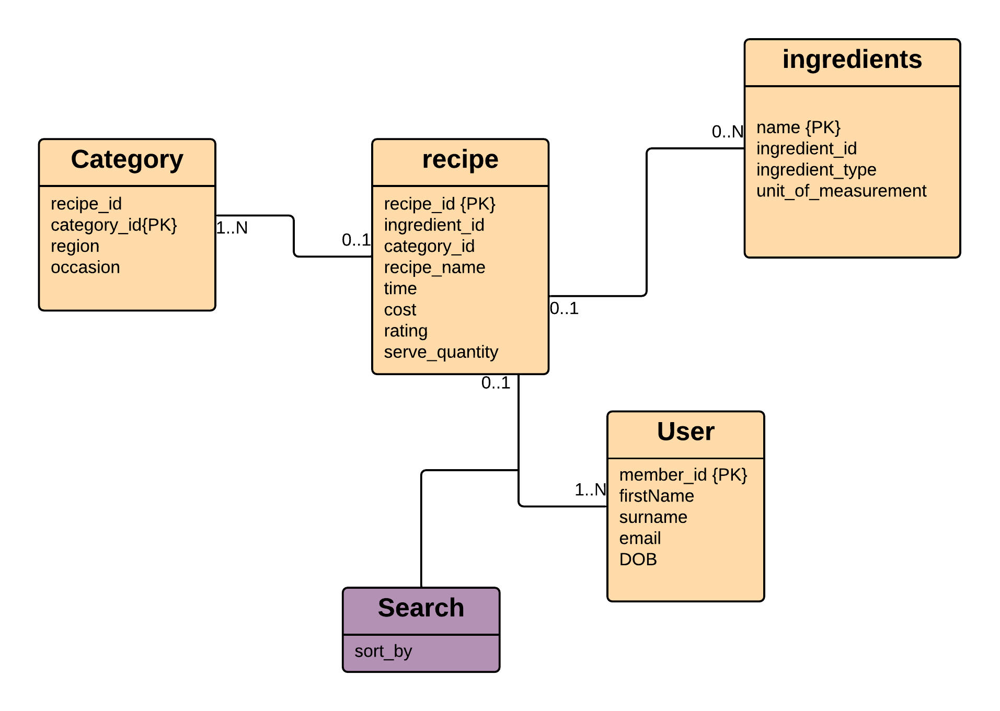
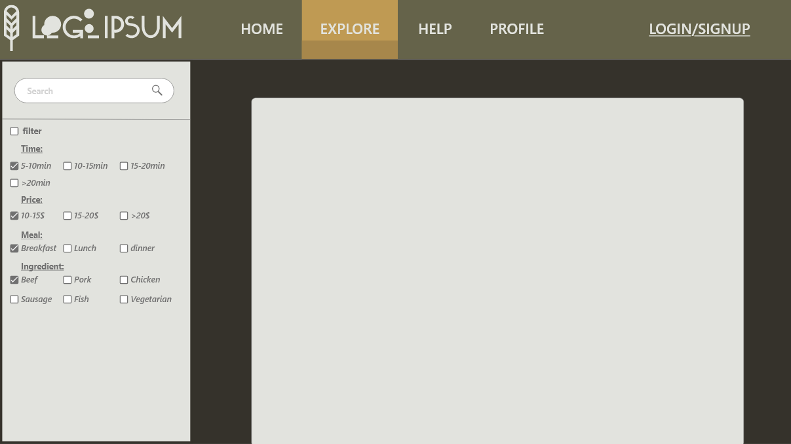
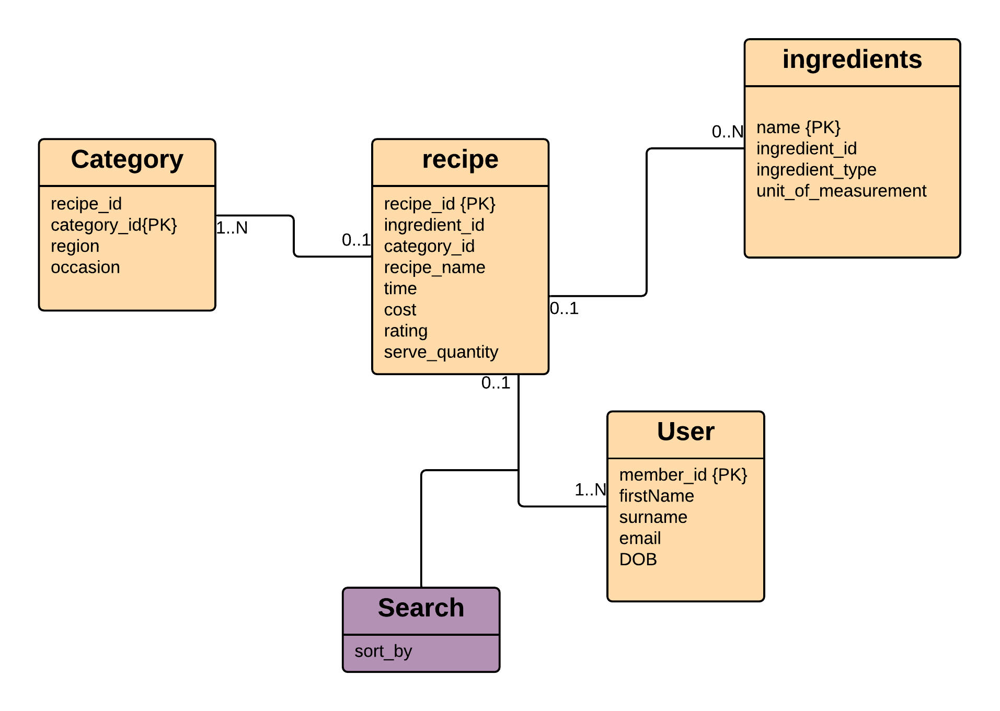
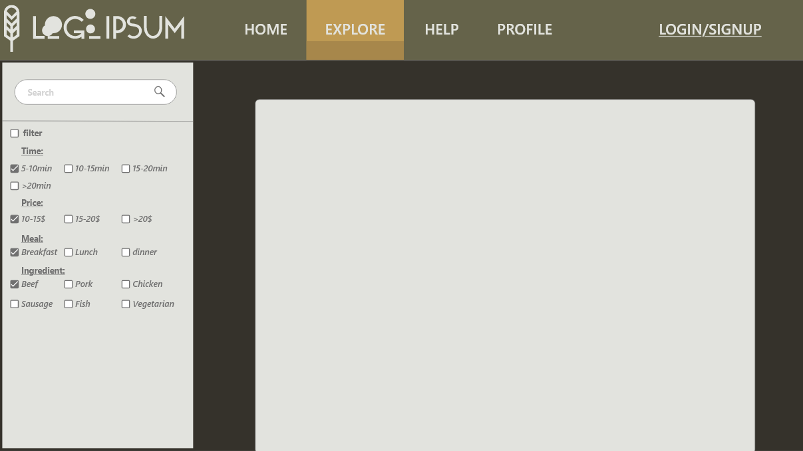

User stories
Bob just came home from university and want to cook something for his dinner. He remembers hearing a recipe website called fruit bath from his colleagues and so he decides to try the website. Upon entering the site, he is greeted with the homepage which contain many recipes. He felt like having chicken for dinner, so he enters ‘chicken’ in the search bar and was then taken to the result page which contain chicken recipes. After browsing for a couple of minutes, he found a recipe he would like to try out and so he gets ready for cooking.
Design Diagrams
 




Explanation
The user may use the filter when searching for a recipe, by default the filter is not applied. The user enters can enter any words into the search bar a query will be sent to the database to find recipes that matches what the user entered as well as any filter that was selected(only applies if any were selected). If there is a match the user will be taken to the result pages containing all recipes that matches what the user requested.
Validation Criteria
If the user enters a word/words in search bar and the database contain recipes that matches the word that was typed then the user will be taken to the result page which will display all the recipe matching what the user typed.
If the user enters a word/words incorrectly or if the database don’t have any recipe that matches what being typed in then the user will be taken to a page which will display a message telling the user that we weren’t able to find any recipe that matches.